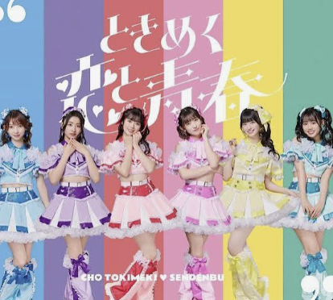

TOKYO,Japan
일본 음악은 전통 악기와 독특한 음계, 섬세한 선율을 특징으로 하며, 자연과 계절의 변화, 인간의 감정을 음악에 담아내는 경향이 있다. 전통 음악은 샤미센과 고토, 샤쿠하치 등의 악기를 활용하며, 절제된 표현과 여백을 통해 일본 특유의 미적 감각을 드러낸다. 메이지 유신 이후 서양 음악이 유입되면서 일본 음악은 전통적인 요소와 서양의 화성 및 연주 기법을 결합하며 새로운 형태로 발전했다. 현대에는 J-pop, 록, 아이돌 음악, 애니메이션 음악 등 다양한 장르가 발달했으며, 중독성 있는 멜로디와 개성 있는 음악적 콘셉트가 특징으로 나타난다. 이처럼 일본 음악은 전통적인 미의식과 현대적인 대중문화가 공존하며, 애니메이션과 게임 등 다양한 콘텐츠와의 결합을 통해 세계적으로 독자적인 음악 문화를 형성하고 있다.
일본을 대표하는 음악 장르
원하는 장르를 선택하여 추천 플레이리스트를 들어보세요
City Pop
시티팝은 1970년대 후반부터 1980년대 초반에 걸쳐 일본에서 유행한 음악 장르로, 도시적인 분위기와 세련된 사운드를 특징으로 한다. 이 장르는 재즈, 소울, 펑크, 록 등 다양한 음악적 요소를 혼합하여 만들어졌으며, 특히 도쿄와 같은 대도시의 현대적인 라이프스타일과 연관되어 있다.
J-Rock
J-Rock은 일본에서 발전한 록 음악의 한 형태로, 다양한 음악적 요소를 결합하여 독특한 사운드를 만들어낸다. 이 장르는 1970년대부터 시작되어 1980년대에 큰 인기를 끌었으며, 현재까지도 많은 팬들을 보유하고 있다.

Animation Soundtrack
애니메이션 사운드트랙은 애니메이션 작품에 사용되는 배경 음악으로, 작품의 분위기와 감정을 강조하는 데 중요한 역할을 한다. 일본의 애니메이션 산업은 다양한 음악 장르를 활용하여 독특한 사운드를 만들어내고 있다.

Idol
아이돌 음악은 일본에서 발전한 대중 음악의 한 형태로, 보통 젊은 여성 가수가 중심이 되어 다양한 스타일의 노래를 부른다. 이 장르는 팝 음악과 연주 음악을 결합하여 청취자들에게 즐거움과 감동을 전달한다.
Japan 80s
1980년대 일본 음악은 다양한 장르와 스타일을 결합하여 독특한 사운드를 만들어냈다. 이 시기는 전통 음악과 현대 음악이 융합되며, 젊은 세대에게 큰 영향을 미쳤다.

Vocaloid
Vocaloid은 일본에서 개발된 가상 가수 소프트웨어로, 사용자가 직접 노래를 작곡하고 가사를 입력하면 가상의 가수가 노래를 불러준다.
Japanese Hip-Hop
일본 힙합은 1980년대 후반부터 시작되어 현재까지 발전해온 음악 장르로, 미국 힙합의 영향을 받으면서도 일본 특유의 문화와 언어를 반영한 독자적인 스타일을 형성하고 있다. 이 장르는 랩, 비트박스, DJing 등 다양한 요소를 포함하며, 사회적 메시지와 개인적인 이야기를 담아내는 경향이 있다.
J-Indie
J-Indie는 일본에서 발전한 인디 음악의 한 형태로, 독창적인 사운드와 깊은 의미를 담은 노래들을 특징으로 한다. 이 장르는 전통적인 일본 음악 요소와 현대 음악을 결합하여 새로운 경험을 제공한다.